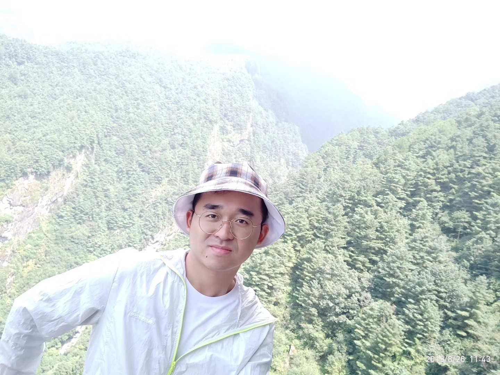

|  |
Meng Lan
Ph.D. Candidate
SIGMA group
Email: menglan AT whu.edu.cn
|
Lan Meng is a Ph.D Candidate at School of Computer Science, Wuhan University, working with Prof. Lefei Zhang. His primary reasearch interests are Computer Vision, Video Understanding and Remote Sensing. Now, he works as an intern at JD Explore Academy, supervised by Prof. Dacheng Tao.
Education
| Wuhan University Ph.D. Candidate in Computer Science Sep 2018 - , Wuhan Advisor: Prof. Lefei Zhang Mentors: Prof. Dacheng Tao, Prof. Bo Du and Dr. Jing Zhang |
| Wuhan University Bachelor in Internet of Things Engineering Sep 2014 - June 2018, Wuhan |
Publications List
| Global context based automatic road segmentation via dilated convolutional neural network
M Lan, Y Zhang, L Zhang, B Du Information Sciences, 2020 |
| E3SN: Efficient End-to-End Siamese Network for Video Object Segmentation
M Lan, Y Zhang, Q Xu, L Zhang IJCAI, 2020 |
| Defect detection from UAV images based on region-based CNNs
M Lan, Y Zhang, L Zhang, B Du ICDMW, 2018 |
Academic Services
|
Invited Reviewer for IEEE Transactions on Neural Networks and Learning Systems (TNNLS) Invited Reviewer for IEEE Transactions on Geoscience and Remote Sensing (TGRS) Invited Reviewer for IEEE Access Invited Reviewer for IEEE Geoscience and Remote Sensing Letters Invited Reviewer for IEEE International Conference on Computer Vision (ICCV) Invited Reviewer for IEEE Conference on Computer Vision and Pattern Recognition (CVPR) Invited Reviewer for International Joint Conferences on Artificial Intelligence (IJCAI) |
Last update: Apr. 20th, 2021.